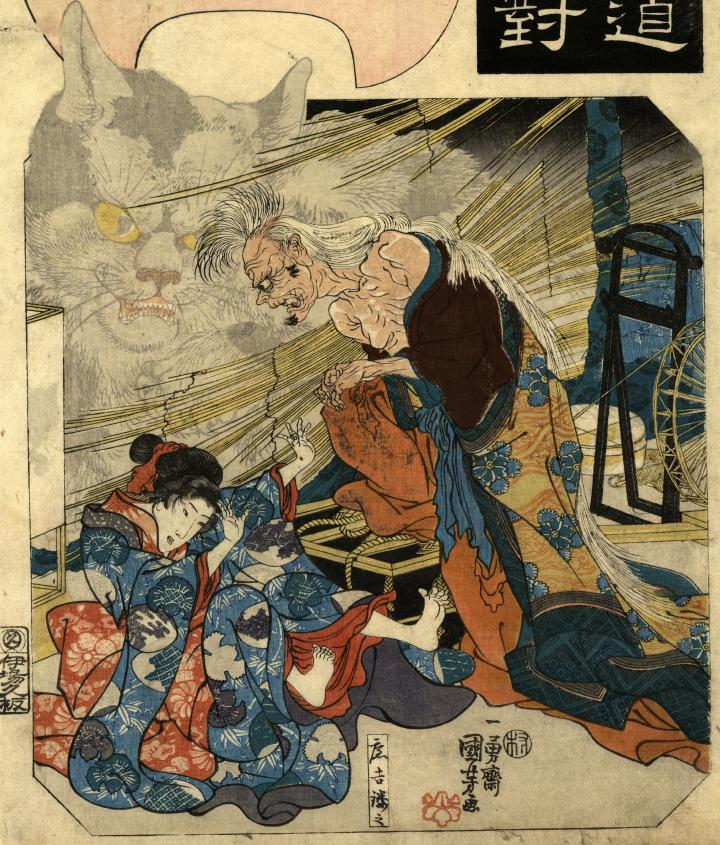

若い娘を襲う老女。着物ははだけ、髪を乱している。実は年老いた猫が化けた姿で、破れたすだれの奥には巨大な猫の幻影が映し出されている。
著作者：一勇齋國芳／出典：親書誌：U426_nichibunken_0315：岡部；オカベ／日付：2014／資源識別子：U426_nichibunken_0315_0001_0000
Copyright (c)2010- International Research Center for Japanese Studies, Kyoto, Japan. All rights reserved.